Palette swap only: same pixels, same 10 palette entries, every changed channel a multiple of 8. Each picture is the top 136 screen lines at 3x; the still is on top, the 10 frame animation under it. Scroll each row sideways. Weak edge = share of outer logo pixels with contrast ratio under 1.5 against the sky next to them.
Storm
Rim colour taken from the storm light (pale grey-green). The outer line colour also fills the letter counters and the lines between letters, so they turn pale with it.
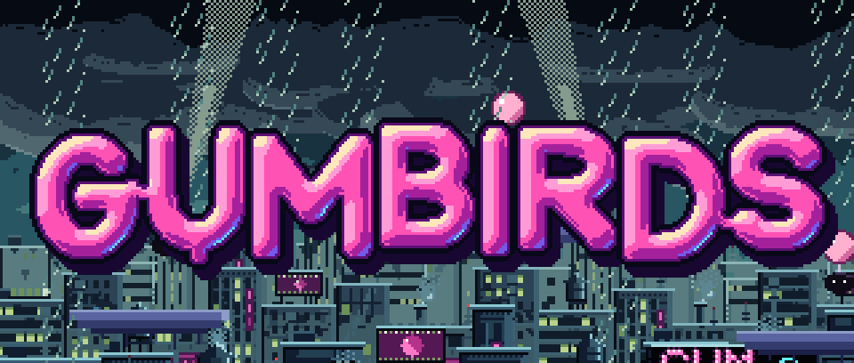
REF: current logo No palette change. Mean contrast 3.03, lowest 1.01, weak edge 17.9% (animation frames 16.1% to 19.2%, widest frame 16.5%). Full screen
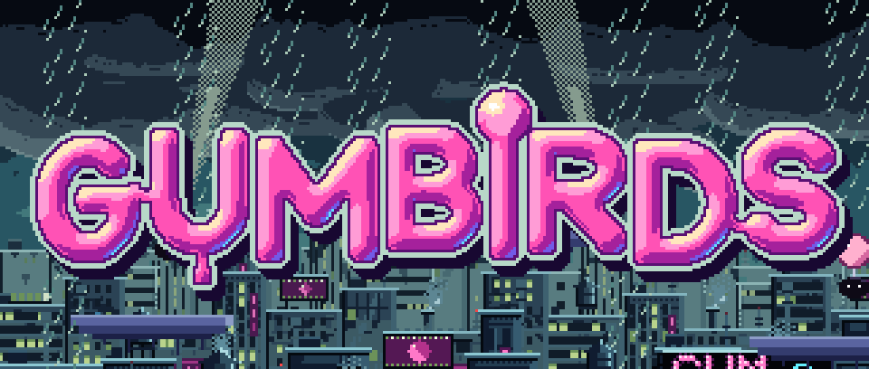
S1: pale grey-green rim, shadow kept outer line 8,8,24 to 184,216,200 Mean contrast 4.94, lowest 1.02, weak edge 6.1% (animation frames 5.8% to 6.9%, widest frame 6.0%). Full screen
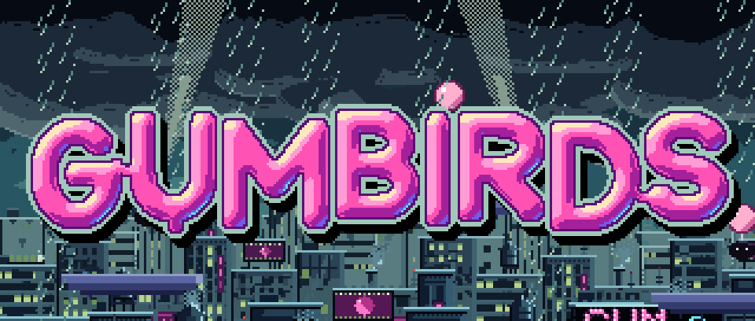
S2: grey-green rim, black shadowrecommended outer line 8,8,24 to 160,200,184 drop shadow 24,8,49 to 0,0,0 Mean contrast 4.58, lowest 1.02, weak edge 5.0% (animation frames 4.4% to 5.8%, widest frame 4.8%). Full screen
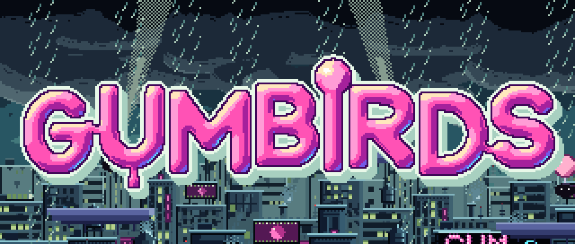
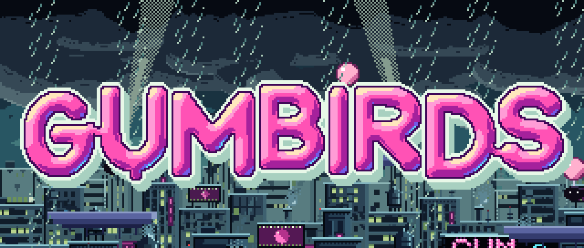
S3: lightning rim, pale shadow, deeper keyline outer line 8,8,24 to 232,248,232 drop shadow 24,8,49 to 168,208,192 keyline 90,16,115 to 64,8,88 Mean contrast 6.67, lowest 1.01, weak edge 2.4% (animation frames 2.4% to 2.6%, widest frame 2.5%). Full screen
Moon
Rim colour taken from the moonlight (cool blue).
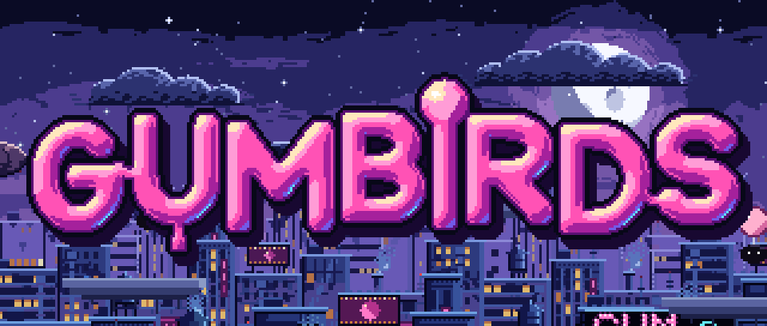
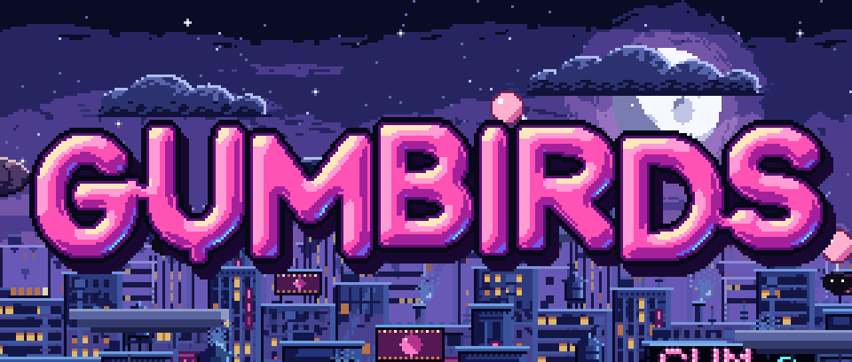
REF: current logo No palette change. Mean contrast 3.00, lowest 1.01, weak edge 11.7% (animation frames 9.9% to 14.3%, widest frame 10.1%). Full screen
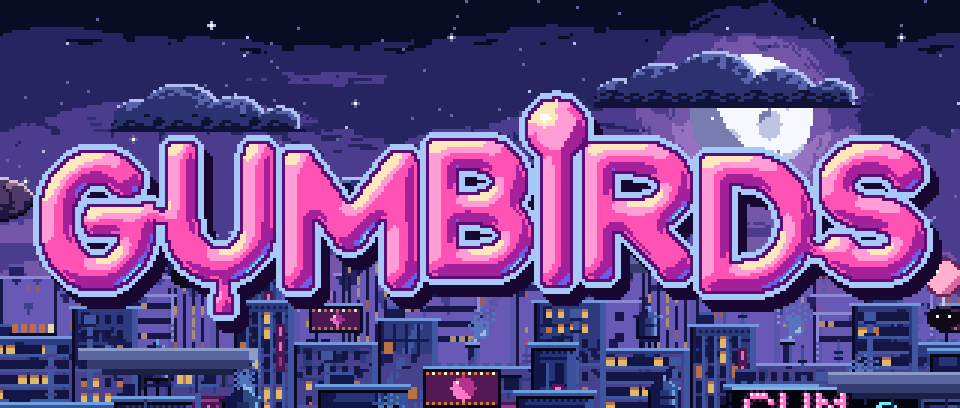
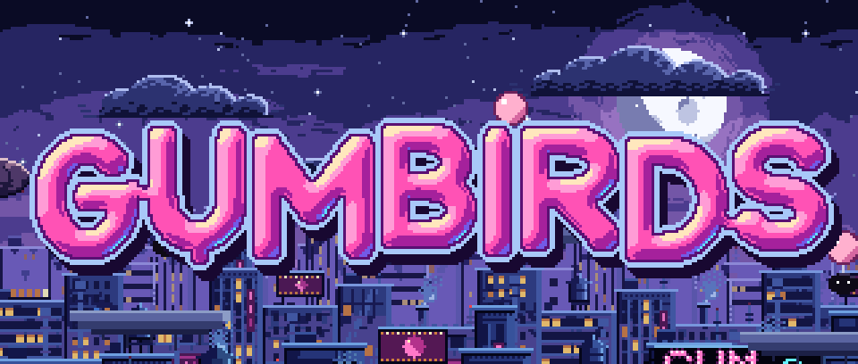
M1: moonlight rim, shadow kept outer line 8,8,24 to 168,200,248 Mean contrast 4.14, lowest 1.01, weak edge 5.0% (animation frames 5.0% to 6.2%, widest frame 5.4%). Full screen
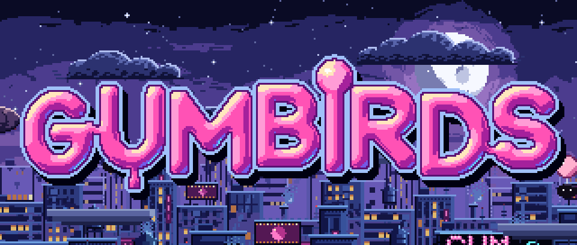
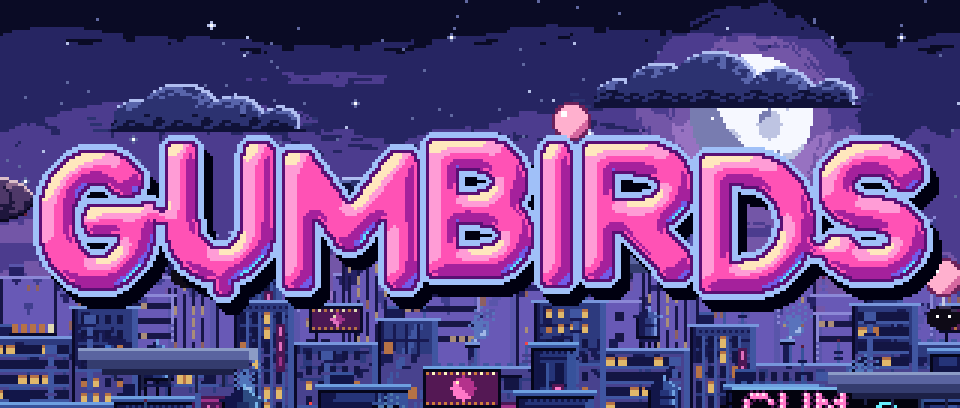
M2: moonlight rim, blue-black shadowrecommended outer line 8,8,24 to 160,192,248 drop shadow 24,8,49 to 0,0,16 Mean contrast 4.10, lowest 1.01, weak edge 4.5% (animation frames 4.5% to 5.6%, widest frame 4.9%). Full screen
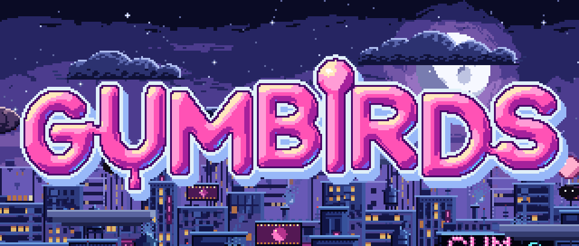
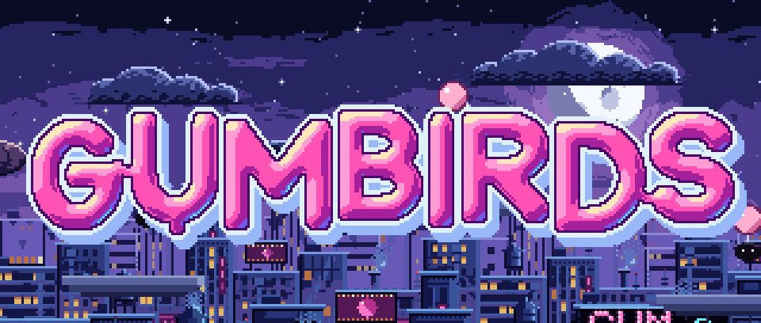
M3: ice rim, sky-blue shadow, deeper keyline outer line 8,8,24 to 224,240,248 drop shadow 24,8,49 to 152,184,248 keyline 90,16,115 to 72,8,104 Mean contrast 5.90, lowest 1.10, weak edge 2.8% (animation frames 2.8% to 3.7%, widest frame 3.3%). Full screen
Dusk
The current dark line already separates from the warm sky; the apricot rim is shown only for comparison.
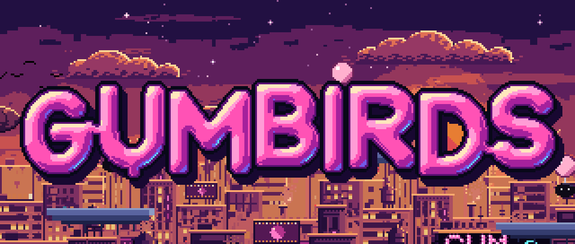
REF: current logorecommended No palette change. Mean contrast 3.77, lowest 1.01, weak edge 3.2% (animation frames 2.9% to 4.1%, widest frame 3.2%). Full screen
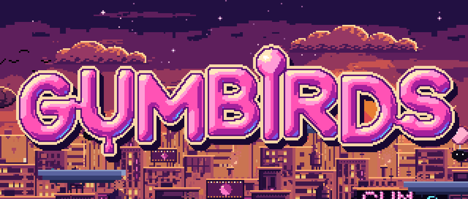
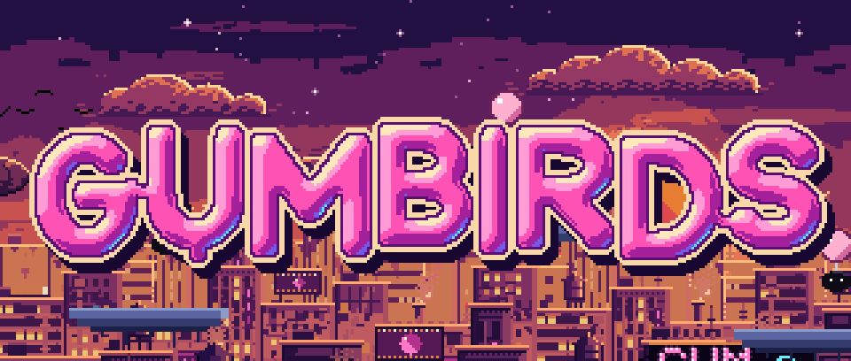
D1: apricot rim, shadow kept (optional) outer line 8,8,24 to 248,216,168 Mean contrast 5.21, lowest 1.00, weak edge 1.9% (animation frames 1.8% to 2.7%, widest frame 2.1%). Full screen